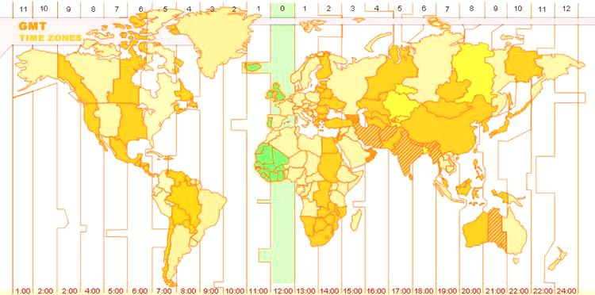

O GMT (Greenwich Mean Time ou Tempo Médio de Greenwich) é um sistema de fusos horários referente ao tempo solar médio no Observatório Real em Greenwich, no sudeste de Londres. Ao qual é onde passa o meridiano de greenwich.
O meridiano de Greenwich divide o globo terrestre em ocidente e oriente e define o fuso horário. Os fusos ocidentais possuem o sinal negativo, uma indicação de que as horas diminuem na direção Oeste. O contrário acontece com os fusos orientais (sinal positivo, as horas aumentam, Leste de Greenwich).
Como a velocidade de rotação da terra é irregular não é sempre que o sol cruza o meridiano de Greenwich exatamente ao meio-dia. Podem ocorrer oscilações de até 16 minutos para mais ou para menos.

O que é UTC?
O UTC (Universal Time Coordinated ou Tempo Universal Coordenado) foi criado em 1970 por cientistas com base nos relógios atômicos e não nos celestes, para eliminar a inclusão de uma localização específica em um padrão internacional. Ele não se define pelo sol ou estrelas, mas sim pela medida derivada do Tempo Atômico Internacional. Soma-se ou subtrai-se segundos de salto em intervalos irregulares para compensar pela oscilação no tempo de rotação da Terra, por isto ele é mais preciso que o GMT.
Diferenciando do GMT, o UTC é um padrão de tempo e não um fuso horário, ele é a base para o tempo civil e fusos horários no mundo, por isso nenhum país usa oficialmente o UTC como hora local.
Sendo assim, o UTC é vantajoso pois não depende das políticas dos países do mundo e não necessita de regulação relativa a hora de inverno ou verão. Por isso é usado na aviação, cartas de navegação e outras áreas. Para evitar confusão decorrente aos diferentes fusos e horários de verão, assegurando que todos estejam utilizando a mesma referência horária.